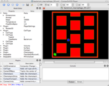

We make the assumption that our approach to simulation via CompuCell3D is:
Fortunately, providing the software for such batch processing means that we can eliminate certain libraries as dependencies, e.g. for the GUI (Qt) and the visualization (VTK). We may, however, need to incorporate other libraries, e.g. for multicore (threading) or clusters (message-passing).
We need to understand/explain the current state of CompuCell3D, in terms of the interconnectedness of computation, GUI, and visualization.
As of this writing (summer 2009), we now use PyQt (Python-wrapped Qt) for the GUI to produce the following:

# compucell3d.pyw - found in install dir /player
import sys
import os
def setVTKPaths():
import sys
from os import environ
import string
import sys
platform=sys.platform
if platform=='win32':
sys.path.append(environ["VTKPATH"])
sys.path.append(environ["VTKPATH1"])
sys.path.append(environ["PYQT_PATH"])
sys.path.append(environ["SIP_PATH"])
sys.path.append(environ["SIP_UTILS_PATH"])
# else:
# swig_path_list=string.split(environ["VTKPATH"])
# for swig_path in swig_path_list:
# sys.path.append(swig_path)
print "PATH=",sys.path
setVTKPaths()
print "PATH=",sys.path
import vtk
#from PyQt4.QtGui import QApplication. Hello :)
from UI.UserInterface import UserInterface
from CQt.CQApplication import CQApplication
#mainWindow = None
def main():
sys.path.append(os.environ["PYTHON_MODULE_PATH"])
sys.path.append(os.environ["SWIG_LIB_INSTALL_DIR"])
import CompuCellSetup
CompuCellSetup.playerType="new" # the value of CompuCellSetup.playerType (can be "new" or "old") determines which PlayerPython module will be loaded. For the new player we want PlayerPythonNew
import PlayerPython # from now on import PlayerPython will import PlayerPythonNew
#global mainWindow
app = CQApplication(sys.argv)
#app.connect(app, SIGNAL("lastWindowClosed()"), app, SLOT("quit()"))
mainWindow = UserInterface()
mainWindow.show()
app.exec_()
if __name__ == '__main__':
main()
Let's take a look at the CompuCellSetup.py module (found in /core/PythonScripts of svn; /pythonSetupScripts of install dir; delete the corresponding .pyc file first):
heiland@Macintosh-3:~/dev/Glazier/cc3d-5-13-09/pythonSetupScripts$ python Python 2.5.1 (r251:54863, Jan 13 2009, 10:26:13) [GCC 4.0.1 (Apple Inc. build 5465)] on darwin Type "help", "copyright", "credits" or "license" for more information. >>> import CompuCellSetup CompuCellSetup.py:277: SyntaxWarning: name 'simulationPaths' is used prior to global declaration global simulationPaths CompuCellSetup.py:289: SyntaxWarning: name 'simulationPaths' is used prior to global declaration global simulationPaths CompuCellSetup.py:290: SyntaxWarning: name 'cc3dXML2ObjConverter' is used prior to global declaration global cc3dXML2ObjConverter CompuCellSetup.py:382: SyntaxWarning: name 'simulationPaths' is used prior to global declaration global simulationPaths >>> dir(CompuCellSetup) ['CC3DCPlusPlusError', 'ExtractLatticeType', 'ExtractPythonScriptNameFromXML', 'SimulationPaths', 'XML2ObjConverterAdapter', '__builtins__', '__doc__', '__file__', '__name__', 'attachDictionaryToCells', 'attachListToCells', 'cStringIO', 'cc3dActiveSteerableList', 'cc3dModuleDictionary', 'cc3dXML2ObjConverter', 'cc3dXML2ObjConverterAdapter', 'clearActiveSteerableList', 'clearVectorFieldPy', 'createFloatFieldPy', 'createScalarFieldCellLevelPy', 'createScalarFieldPy', 'createVectorFieldCellLevelPy', 'createVectorFieldPy', 'executeSteering', 'extraInitSimulationObjects', 'getChangeWatcherRegistry', 'getCoreSimulationObjects', 'getCoreSimulationObjectsNewPlayer', 'getCoreSimulationObjectsOldPlayer', 'getEnergyFunctionRegistry', 'getModuleParseData', 'getSteppableRegistry', 'getStepperRegistry', 'initModules', 'initializeSimulationObjects', 'mainLoop', 'mainLoopNewPlayer', 'mainLoopOldPlayer', 'os', 'parseXML', 'playerType', 'registerPlugin', 'registerPotts', 'registerSteppable', 'setSimulationXMLDescription', 'setSimulationXMLDescriptionNewPlayer', 'setSimulationXMLDescriptionOldPlayer', 'setSimulationXMLFileName', 'simulationFileName', 'simulationObjectsCreated', 'simulationPaths', 'simulationPythonScriptName', 'simulationThreadObject', 'simulationXMLDescription', 'steer', 'sys', 'traceback']